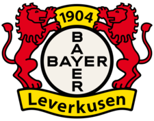

Jalkapallon tunnetuimpia joukkueita
La Liga (Espanjan liiga)
.svg.png)
FC Barcelona
Maailman tunnetuimpia joukkueita.
- Perustamisvuosi: 1899
- Kotikaupunki: Barcelona
- Kotikenttä: Camp Nou
- Päävalmentaja: Hansi Flick
- Kuuluisia pelaajia: Lionel Messi, Ronaldinho, Johan Cruyff

Real Madrid
Voittanut useita mestaruuksia.
- Perustamisvuosi: 1902
- Kotikaupunki: Madrid
- Kotikenttä: Santiago Bernabéu
- Päävalmentaja: Carlo Ancelotti
- Kuuluisia pelaajia: Cristiano Ronaldo, Alfredo Di Stéfano, Zinedine Zidane
Atletico Madrid
Madridin toinen suurseura.
- Perustamisvuosi: 1903
- Kotikaupunki: Madrid
- Kotikenttä: Estadio Metropolitano
- Päävalmentaja: Diego Simeone
- Kuuluisia pelaajia: Fernando Torres, Diego Forlán, Antoine Griezmann
Premier League (Englannin liiga)

Manchester United
Englannin suurimpia jalkapalloseuroja.
- Perustamisvuosi: 1878
- Kotikaupunki: Manchester
- Kotikenttä: Old Trafford
- Päävalmentaja: Rúben Amorim
- Kuuluisia pelaajia: David Beckham, Ryan Giggs, Eric Cantona

Liverpool FC
Yksi maailman menestyneimmistä joukkueista.
- Perustamisvuosi: 1892
- Kotikaupunki: Liverpool
- Kotikenttä: Anfield
- Päävalmentaja: Arne Slot
- Kuuluisia pelaajia: Steven Gerrard, Kenny Dalglish, Mohamed Salah

Arsenal FC
Arsenal on yksi Valioliigan suurista seuroista.
- Perustamisvuosi: 1886
- Kotikaupunki: Lontoo
- Kotikenttä: Emirates Stadium
- Päävalmentaja: Mikel Arteta
- Kuuluisia pelaajia: Thierry Henry, Dennis Bergkamp, Patrick Vieira
Bundesliga (Saksan liiga)
Bayern München
Saksan suurin jalkapalloseura, joka on voittanut lukuisia mestaruuksia.
- Perustamisvuosi: 1900
- Kotikaupunki: München
- Kotikenttä: Allianz Arena
- Päävalmentaja: Vincent Kompany
- Kuuluisia pelaajia: Gerd Müller, Franz Beckenbauer, Lothar Matthäus
Borussia Dortmund
Saksan toiseksi suurin seura, joka tunnetaan intohimoisista faneistaan.
- Perustamisvuosi: 1909
- Kotikaupunki: Dortmund
- Kotikenttä: Signal Iduna Park
- Päävalmentaja: Nuri Şahin
- Kuuluisia pelaajia: Marco Reus, Erling Haaland, Mats Hummels

Bayer Leverkusen
Kovatasoinen saksalaisseura, joka on tunnettu korkeasta pelitasostaan.
- Perustamisvuosi: 1904
- Kotikaupunki: Leverkusen
- Kotikenttä: BayArena
- Päävalmentaja: Xabi Alonso
- Kuuluisia pelaajia: Lukas Hradecký, Michael Ballack, Rudi Völler